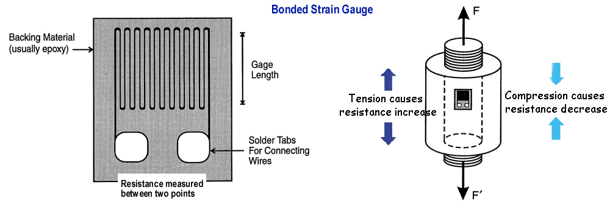
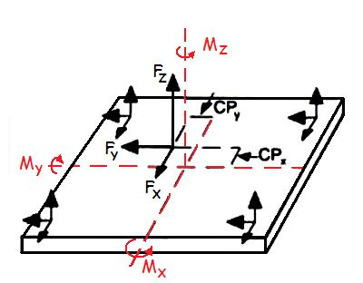
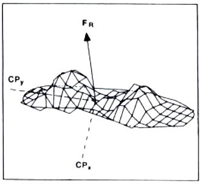
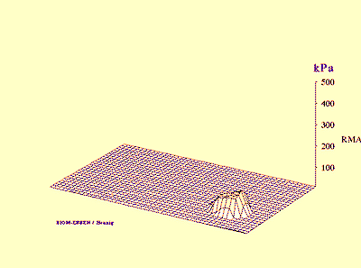

Kinetic Data Collection of Human Movement
In order to analyze human movement quantitatively, we must measure human movement. Kinematic variables are variables that describe human movement. They include displacement, velocity, and acceleration. The most common method of measuring human movement is to use film or video recordings with a method called "motion capture" to collect displacement data. We can differentiate the displacement data to get velocity and again to get acceleration. Kinetic variables like force can be obtained by combining kinematic variables and anthropometry. For example, multiplying acceleration by mass yields force. However, in many situations we can only calculate internal joint reaction forces and net joint moments with the help of external force measurements that cannot be obtained from motion capture. This lecture looks at ways of directly measuring kinetic variables such as force.
Strain Gauges:
-small, thin electrical circuit that detects strain in the direction parallel to the wires (see circuit below)
- as the wires get stretched, the resistance increases so voltage must increase to maintain a constant current.
- uses a Wheatstone bridge (null detector) for small changes in resistance due to compression or tension
- very sensitive to temperature so usually two gauges are combined on opposite sides to cancel the temperature effect.
- very useful for devices that are handled by humans and for ground reaction forces.
Force Platform:

A force plate
is a three dimensional device. Although there are different
types of force plates, the basic principle of each is that tranducers
are placed in the four corners that measure strain due loads placed on
the surface. The diagram to the right shows how the corner transducers
can detect the amount of force applied in three orthogonal directions.
Fz is the total vertical force and Fx and Fy are two
horizontal forces due to friction. A vertical force that is
applied to the center of the plate would produce an equal amount of
strain on each corner. If the force is applied at a point
other than the center, the corner transducers will register unequal
strains and the plate can measure the tendency to twist the plate about
the X and Y axes. The device therefore produces an output of the three
orthogonal forces (Fx, Fy, and Fz) as well as the three orthogonal
moments (Mx, My,
and Mz). For more on the three dimensional
forces and moments, see
the "3-D
Lectures"
.
Whenever an object contacts the plate, the plate resolves that contact
into a single reaction force with a point of application. The
point of application is called the "center of pressure" (CP).
Center of Pressure:
In the diagram above, the center of the force plate is indicated by the intersection of the two red dotted lines. We can see that the force is applied at a location other than the center and if we look at the Fz component, we can see that this off-center application tends to twist the plate about the X and Y axes.

The force plate does not measure the center of pressure directly - it is calculated by dividing the moment by the vertical force. The diagram to the right shows a two-dimensional view of a force plate sunk into the floor. The resultant ground reaction force (F) has a CP which is 10cm from the center of the plate in the positive Y direction. The force plate measures the vertical force (Fz) and the moment of force about the X axis which is coming directly out of the page. The horizontal component (Fy) does not contribute to Mx and Mx is due to the vertical force times the perpedicular distance from the center of the plate (CPy). For example, if Fz = 500 N and Mx = 50 N.m, the formula on the left shows that CPy = 50/500 = 0.10m or 10 cm. Similarly, if the applied force is off center in the X direction, the formula on the right shows how CPx is calculated from My and Fz.
In a static position, the center of gravity of the body must be directly above the CP. In a dynamic movement, the center of gravity is rarely directly above the CP and the CP is continually moving.
For
more on force plates, see
the Force
Plate
Lab.
Pressure Sensors:
The force plate yields a single resultant force vector applied to the plate. Sometimes the clinician would like to know how the forces are distributed within the contact area. In such cases, a pressure pad is used or pressure sensors in a shoe insert are used. These presure sensors are similar to an array of tiny force plates that measure vertical forces based on the pressure applied to a very small area.
The figures below show a plot and a dynamic plot of the force distributons as a person walked across a pressure pad.


- array of sensors that measure vertical force only
- yields the distribution of force rather than a single resultant ground reaction force